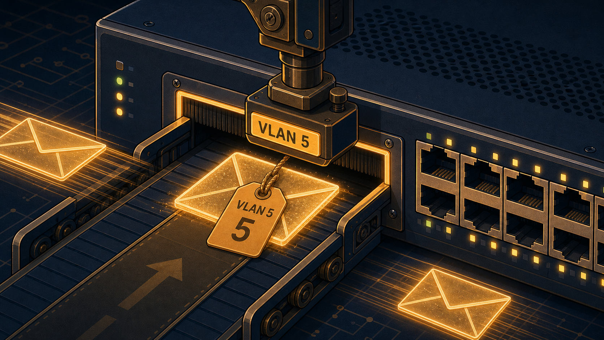
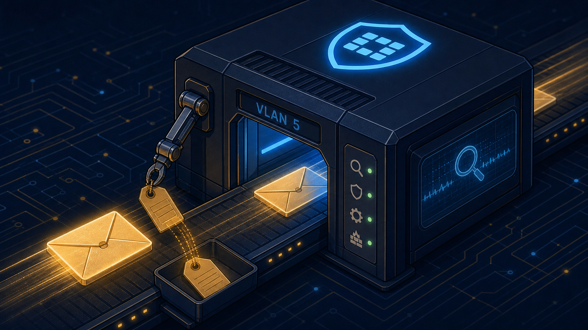
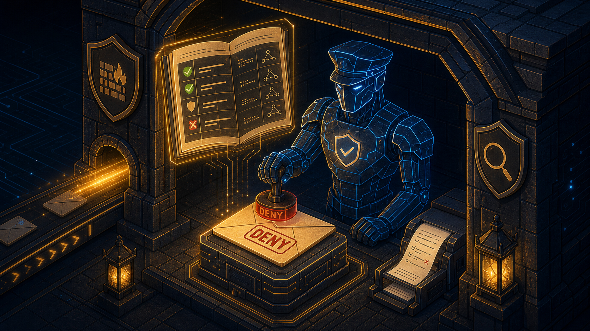
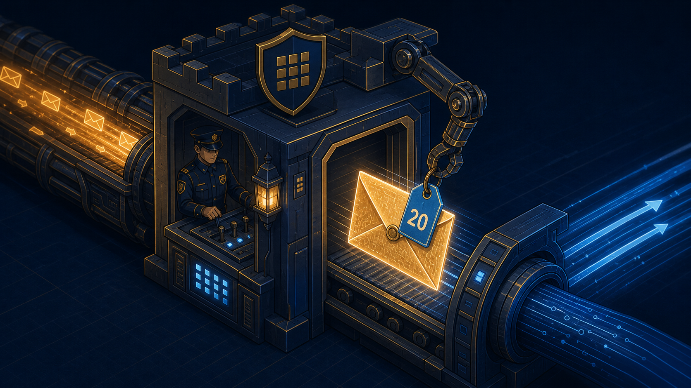

no VLAN tag The host doesn't know or care about VLANs — it just sends a normal Ethernet frame toward its default gateway.
tag added: VLAN 5 The access port is the ONLY point in this journey where an untagged frame gets its first tag. FortiGate will never do this job.

carrying: VLAN 5 One physical cable, multiple VLANs multiplexed by tag. A VLAN 20 (trading floor) frame could be traveling the exact same wire right alongside it, distinguishable only by its tag.
tag removed FortiGate reads "VLAN 5" and matches it to the VLAN5-Exec interface — but it never adds a tag to an untagged frame arriving here. That job was already done in Stage 2.

Now untagged and purely an IP packet, FortiGate checks the firewall policy: is traffic from VLAN5-Exec to VLAN20-Trading allowed? In our design: deny, logged.

tag added: VLAN 20 For any traffic that IS permitted onward, FortiGate adds the destination VLAN's tag before sending the frame back out toward the trading floor switch — proving the tag belongs to the outbound wire, not the original packet.

tag removed for delivery The destination access port removes the VLAN 20 tag before the frame reaches its final untagged destination host — completing the round trip from untagged, to tagged twice, back to untagged.